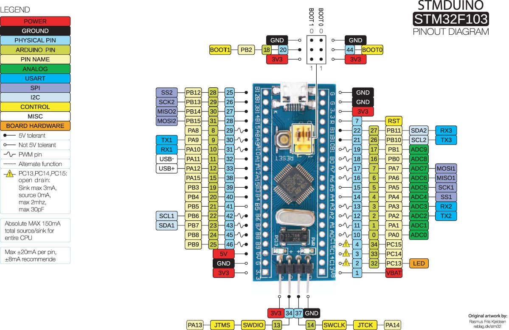

Дешёвая STM32 плата + Arduino IDE
@HWmanОбозреваемая отладочная плата основана на базе микроконтроллера STM32F103C8T6. А прошивать и программировать я её буду в среде разработки Arduino IDE. Очевидно, что отладочная плата на базе STM32 выигрывает по всём параметрам у Arduino Nano, исключением является разве что стоимость, но согласитесь 10 центов — хорошая цена за большую производительность, а про периферию, которой нафарширован STM32, так я вообще молчу, чего только стоят DMA или интегрированные в микроконтроллер часы реального времени.
Схема

Код
/* circuitdigest.com Sample STM32 Blink Program for Blue Pill board */ // the setup function runs once when you press reset or power the board void setup() { // initialize digital pin PC13 as an output. pinMode(PC13, OUTPUT); } // the loop function runs over and over again forever void loop() { digitalWrite(PC13, HIGH); // turn the LED on (HIGH is the voltage level) delay(1000); // wait for a second digitalWrite(PC13, LOW); // turn the LED off by making the voltage LOW delay(1000); // wait for a second }